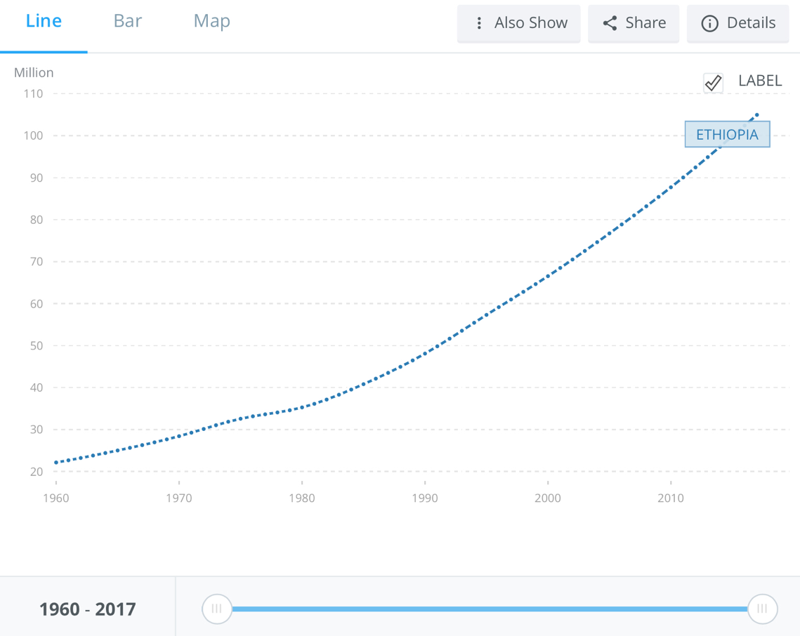

Ethiopia is a land locked country in Africa. The land is defined by 3 major ecological regions which are the Ethiopian Montane Grasslands and Woodlands, Ethiopian Montane Forests and East Sudanian Savanna. There places can include both tropical and subtropical areas, including tropical and subtropical grasslands, Shrublands, savannas, there are also minor deserts biomes in the land too.
As of 2017, the country has a population of 104,957,438.
Ethiopia focuses largely on grains as their staple food source. The most important grains they use are Tef, Barley and Emmer Wheat. These grains are often used to make Enjera, a thin pancake like leavened bread. Ethiopian cuisine also uses spices throughout their dishes, just as with the rest of Africa. Some of the spices are grown in-land while others are imported, mainly from India. Meat from cows, goats or sheep are the main meats in Ethiopia, however many families cannot afford these as they are quite expensive. Wealthy families can afford to have these meats often but the majority of the population only ever serve meat on important days such as ceremonies or religious feasts.
Over the years Ethiopia has experienced increasing drought, causing much of the agricultural business to fall as the country struggles. In the 2008 vegetation spot image, it seen that Ethiopia is already experiencing immense drought. The east side is completely wrecked in drought. The extreme west is still quite vegetated and areas around are dotted with small amounts of vegetation. In the 2017 map, it seen that Ethiopia is facing much more drought. The east side is now suffering severe drought, this greatly affects the land and impacts the effective of the agriculture. Central Ethiopia is now also suffering considerable drought. The entire nation is currently wrought with drought, it is an ongoing issue that requires urgent attention.

Source: https://earthobservatory.nasa.gov/images/19764/drought-in-ethiopia
Source: https://fews.net/sites/default/files/documents/reports/FEWS_NET_Horn_of_Africa_June%202017_Drought_Map_Book.pdf